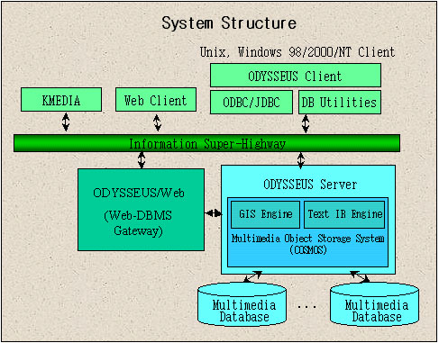

Goal
-
A Multi-User Object-Oriented Multimedia Database Management System (DBMS)
for Information Super-Highway Applications
Features and Characteristics
-
An Object-Oriented Multimedia DBMS Tightly Coupled with the Text Information
Retrieval(IR) System
-
The First Object-Oriented DBMS developed in Korea (version 1.0: 1995.7)
-
ODYSSEUS/IR (version 2.0: 1997.6)
-
Multimedia Database Facilities
-
Client/Server Architecture (Windows 98/NT, UNIX client)
-
Based on the Multimedia Object Storage System (COSMOS)
-
Object-Oriented Query Language (OOSQL with IR Query Extensions)
-
Object Buffer Management
-
Efficient Management of Multimedia Composite Objects
-
Concurrent Access for Multiple Users and Accurate WAL-Based Recovery
-
Scientist of the Month Award '98, Korea Science & Engineering Foundation(KOSEF) and Ministry of Science & Technology(MOST)
-
Commercialized in the Samsung SDS's Naver Engine (http://www.naver.com)

Application Areas
-
Digital Libraries
-
IR Systems and Multimedia DBMSs on Intranets
-
Home Shopping
-
Multimedia Information Servers for Information Super-Highway Applications
-
Base Systems for Hypermedia Systems
-
Object-Oriented DBMSs for Geographic Information Systems(GISs)
-
CAD/CAM Database Systems
Expected Results
-
Technical Know-how (Forced Inheritance, Cost-Based Object Buffer
Replacement, etc.)
-
Patents
-
Commercialization
Research Progress and Future Directions
-
Enhanced Object Buffer Management (Cost-Based Object Buffer Management)
-
Extension to Spatial OODBMS: Spatial Index, Spatial Query Language, and
Spatial Object Storage System
-
Extension to Object-Relational DBMS: ODBC Interfaces, Complete Conformance
to SQL3
-
Extended Multimedia Functionalities: Continuous Stream Management, Synchronization
-
Distributed Architecture: 3-tier Architecture and CORBA
-
Advanced DBMS Functionalities: Long Transactions, Version Management
|